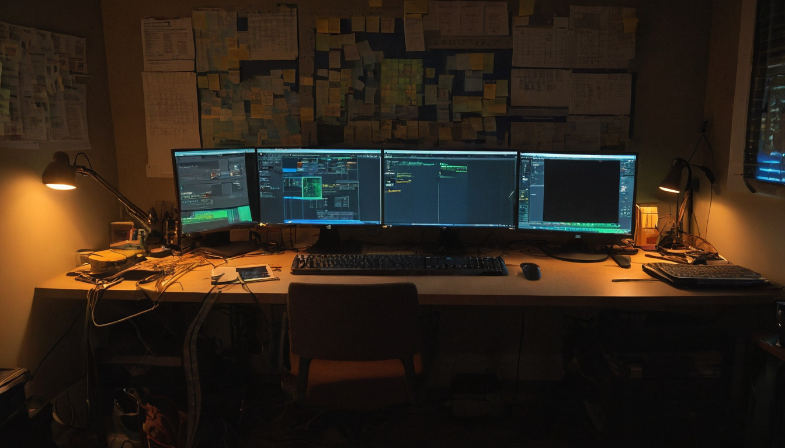
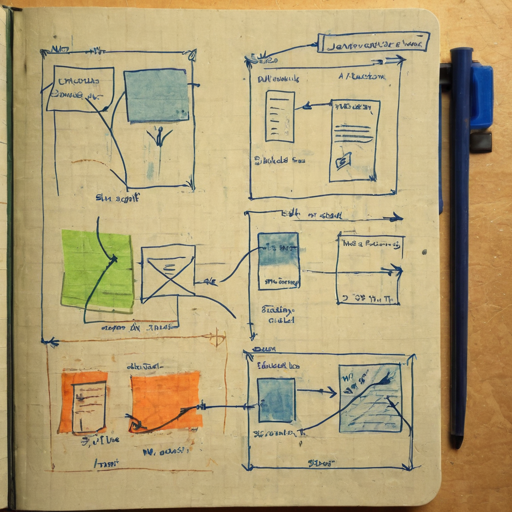

I stopped scrolling on this one because it is the kind of project that quietly fixes a problem a lot of people have been grumbling about without doing anything: how do you actually know which AI pixel art converter is any good? Everyone posts before-and-after screenshots that make their tool look great. Nobody agrees on how to measure it. This bookmark is someone doing the unglamorous work of building a shared yardstick.
@RoundtableSpace shared a post pointing to Pixel-Bench, an open-source benchmark built for comparing AI pixel art converters. According to the post, it runs open, reproducible tests, and anyone can add their own method, run the benchmarks themselves, and check the results independently. The repo is linked from the post at github.com/Retro-Diffusion/pixel-bench. I have not run it myself yet, so I am going off what the post and repo name describe: a structured way to test and compare pixel art conversion methods instead of relying on cherry-picked comparison images.

Pixel art conversion is one of those AI use cases that sits right at the intersection of creator tools and open source. A lot of small studios, solo devs, and NFT artists lean on these converters to turn concept art or renders into clean pixel sprites for games. The problem is that "which converter is best" has mostly been decided by vibes and Twitter screenshots. A reproducible benchmark changes that conversation from "trust me, mine looks better" to "here is the test, run it yourself."
It also fits a pattern I keep noticing: small, useful open-source tools that do not try to be a whole platform. They just solve one annoying, specific problem (in this case, evaluation) and let the community build on top. That is a healthier way for a niche like pixel art AI to mature than everyone just marketing louder.
What it does: Gives pixel art converters a common set of tests so results can be compared on equal footing instead of hand-picked examples.
Who it helps: Tool builders who want to prove their method actually works, game devs and pixel artists trying to pick a converter without guessing, and anyone curious enough to add a new method and see how it stacks up.
Why builders should care: If you are working on a pixel art tool, a public benchmark is either validation or a wake-up call, and both are useful. It also means credibility can come from open results instead of marketing spend.
What still needs work: From the post alone, I cannot tell how many methods are currently benchmarked, how the scoring works, or how actively it is maintained. That is worth checking in the repo before treating any result as final.
What I would test first: I would want to see how a well-known converter scores against a lesser-known one on the same test set, just to see if the benchmark surfaces anything surprising.
I like this because it is infrastructure, not hype. Pixel art AI tools get talked about a lot, but almost nobody builds the boring, useful layer underneath: a way to actually check if the claims hold up. That is the kind of open-source work that does not get much applause but ends up mattering more than another flashy demo.
I do not know the specifics of how deep the test suite goes yet, and that is the one thing I would look at before leaning on any of its results. But the idea itself, letting anyone add a method and reproduce the numbers, is exactly how a small tooling niche builds real trust instead of just louder marketing.
Worth keeping an eye on whether other pixel art tool builders start submitting their methods to the benchmark, since that is the real test of whether a shared standard sticks. If it gets adopted as a reference point the way other ML benchmarks have, it could quietly become the default way people talk about pixel art converter quality. If it does not get picked up, it is still a useful reference for anyone comparing tools today.
Source: X post by @RoundtableSpace, https://x.com/i/web/status/2077947647244329224, retrieved on 2026-07-17.
External references: GitHub repo, Retro-Diffusion/pixel-bench, https://github.com/Retro-Diffusion/pixel-bench